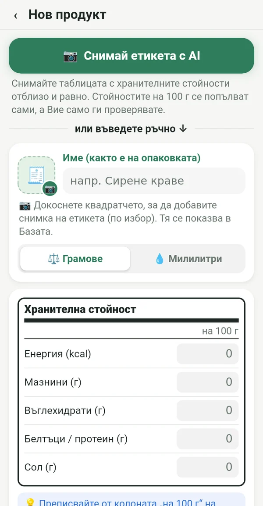
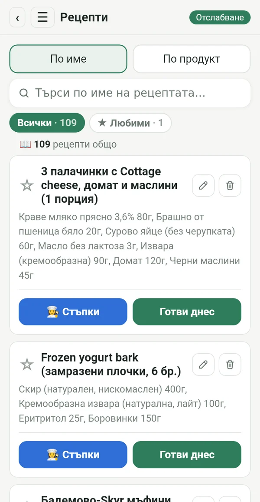
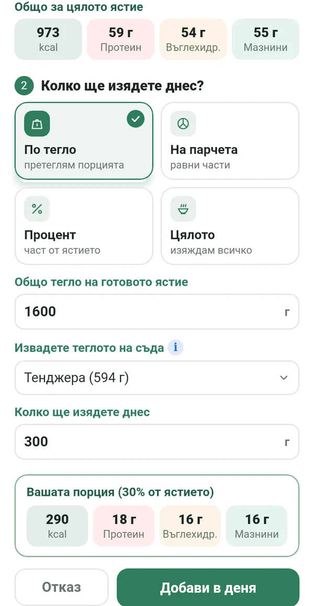
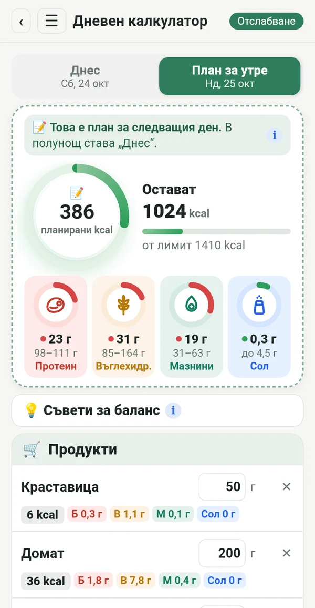
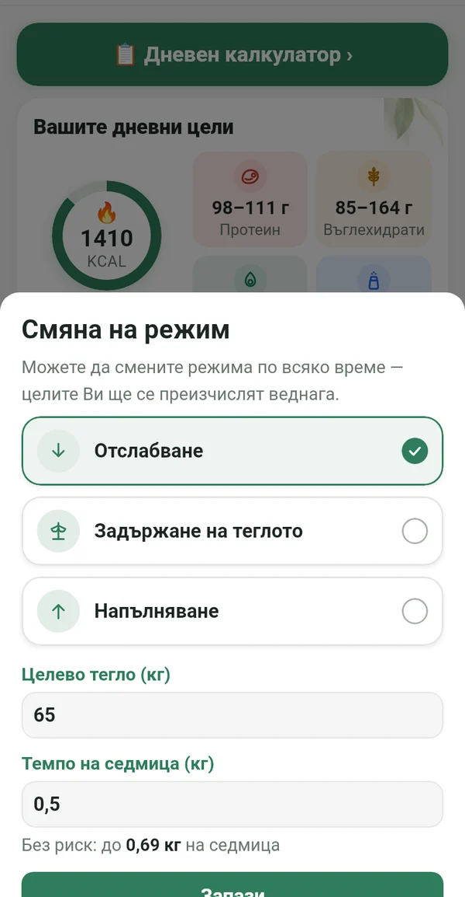
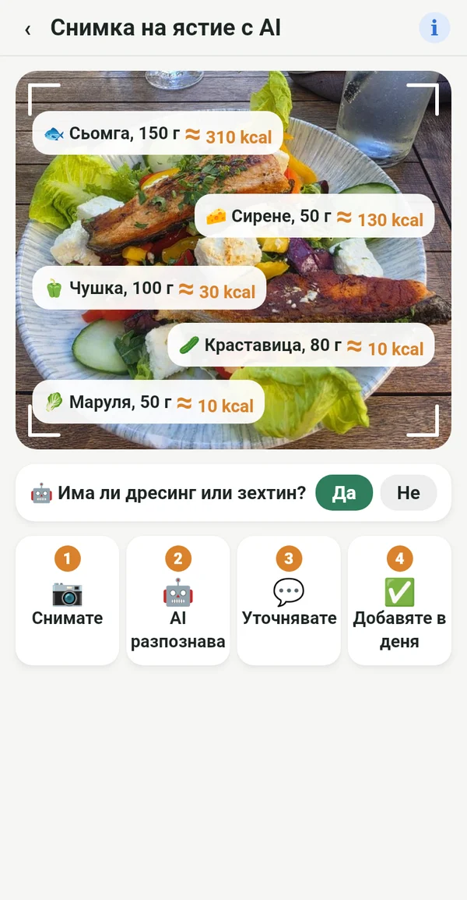

Всичко, от което имате нужда, без излишни неща

Точно от етикета, не от чужди бази
Преписвате стойностите на 100 г от опаковката или просто снимате етикета. Числата съвпадат с това, което реално ядете.
📷 AI снимка на етикета попълва полетата вместо Вас
Вашата електронна готварска книга
Рецептите от тетрадката на баба, от книгите на рафта и от любимите групи, на едно място. Въвеждате ги веднъж и ги ползвате винаги.

Точната порция от цялата тенджера
Претегляте готовото ястие заедно със съда. Macrolia изважда съда и смята колко точно сте изяли.

Планирате, пазарувате, ядете
Още от днес въвеждате какво ще ядете утре. Купувате само нужното, а в полунощ планът става Вашият ден.

Отслабване, задържане или качване
Когато стигнете целта, минавате на „Задържане“. Ако животът се промени, просто сменяте режима. Дневният лимит е по формулата Mifflin-St Jeor и клиничните препоръки, с безопасно темпо.

И навън знаете какво ядете
Снимате чинията и AI разпознава какво има в нея. Стойността е приблизителна и е отбелязана с ≈. По-добре приблизително, отколкото нищо.
Калории от движение
Чрез Health Connect от телефона, часовник или фитнес приложение. Вие избирате колко да се добавят към лимита.
Тегло, графика, отчет
Графика на теглото, снимки „преди и след“ само за Вас и отчет в PDF и Excel.
Съвети за баланс
Кратки подсказки, когато протеинът или мазнините са извън целта. Помага, не командва.
За всяка, която иска да остане в режим
Йо-йо не идва от режима. Идва, когато спреш.
След бебето пак влизаш в режим.
Годините не са причина да се откажеш.
И в ресторанта знаеш какво да поръчаш.
Който точно спазва плана, получава точен резултат.
Вашите данни са само Ваши
Всичко остава на телефона Ви. Без регистрация, без реклами и проследяване. Снимката за AI анализ се изпраща само за изчислението и не се пази.
Абонамент
Месечен или годишен абонамент, и двата със 7 дни безплатно. Отказвате по всяко време в Google Play.
На 14 езика, със светла и тъмна тема.
Въпроси
Кога излиза приложението?
Подготвяме пускането в Google Play. Пишете ни и ще Ви кажем, когато е готово.
Има ли версия за iPhone?
Засега само за Android. Версия за iPhone планираме след това.
Защо няма скенер за баркод?
Базите с баркодове се попълват от потребители и често са грешни или остарели. В Macrolia всяка стойност идва от етикета, затова числата са точни.
Колко AI снимки мога да направя?
До 100 снимки на месец, общо за етикети и ястия.